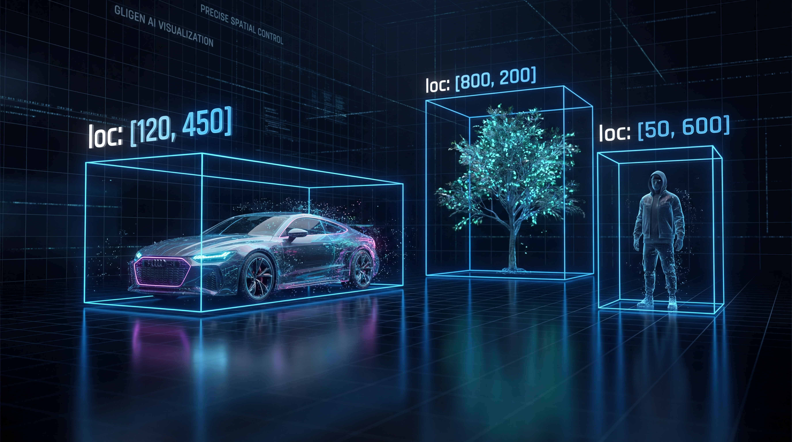

SERVICE
事業内容・技術紹介
一気通貫のプロデュース
企画から生成、そして改善まで。AIテクノロジーを駆使した
新しい映像制作のワークフローを提供します。
PLANNING
企画・設計
従来の絵コンテ作成時間をAIで90%削減。
クライアントの抽象的なイメージを、
その場で具体的なビジュアル案へと変換します。
GENERATION
AI生成・制作
実写撮影を行わず、フルAIによる動画生成。
キャスティングやロケのコストをゼロに。
不可能なカメラワークも実現可能です。
ANALYSIS
分析・改善
クリエイティブごとの視聴データを分析。
「何が刺さったか」を数値化し、
次の生成へ即座にフィードバックさせます。
Production Demos
Case Study 01
AI Model Generation
Case Study 02
3D Motion & VFX
The Edge of Generative AI
単なる生成ではなく、「制御」されたクリエイティブへ。
01. Character Consistency
キャラクター一貫性維持技術
生成AIの最大の弱点である「カットごとの顔ブレ」を解消しました。
マスタープロンプトと自己回帰的LoRA技術を組み合わせることで、
長尺のストーリー動画でも同一人物として認識される一貫したキャラクター生成を実現しています。
02. Layout Control (GLIGEN)
GLIGEN拡張による構図制御
プロンプトだけでは制御しきれない「被写体の配置」を、GLIGEN技術によって完全にコントロールします。
画面上の任意の領域を指定し、そこに特定の要素を生成させることで、
「偶発的なクリエイティブ」と「意図通りの構図」を共存させます。
